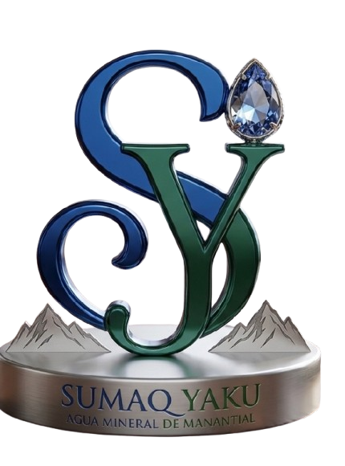
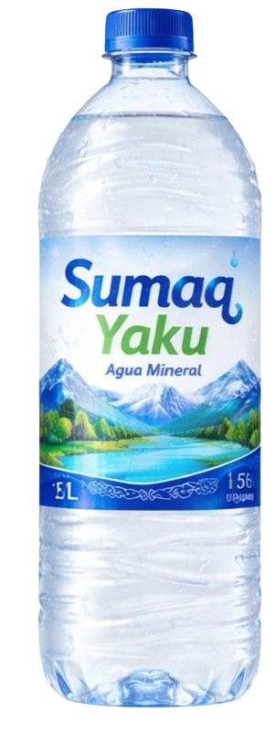
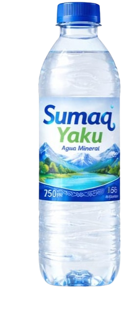
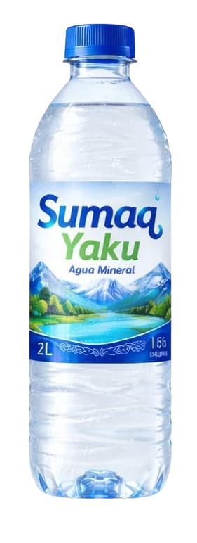
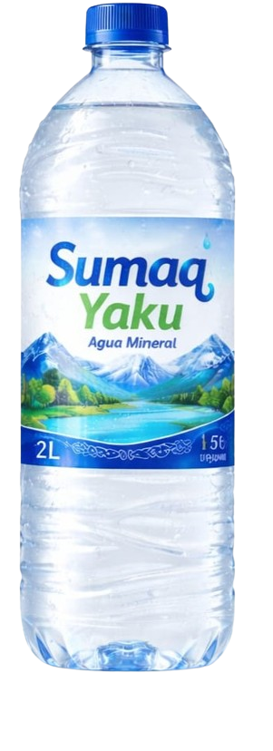

Agua Mineral Sumaq Yaku
Pureza natural desde Llocllapampa, Jauja, Junín.
Agua mineral natural, saludable y fresca desde Llocllapampa
Sumaq Yaku ofrece hidratación segura y accesible para todas las personas. Nuestro producto puro y confiable está pensado para el consumo diario, familiar y grupal.

Nosotros
Sumaq Yaku es una marca dedicada a ofrecer agua mineral natural de alta calidad, enfocada en brindar una hidratación saludable, segura y accesible para todas las personas. Nuestro compromiso es promover el bienestar y un estilo de vida saludable a través de un producto puro, fresco y confiable.
Nos inspiramos en la naturaleza y en la importancia del cuidado personal, por ello buscamos llevar a nuestros consumidores un agua que conserve su esencia natural, contribuyendo a su salud y calidad de vida.
En Sumaq Yaku trabajamos con responsabilidad y compromiso, garantizando un producto que cumpla con los más altos estándares de calidad, pensado para el consumo diario, familiar y grupal.
Por qué elegir Sumaq Yaku
Nacida en Llocllapampa, con una composición equilibrada y sabor limpio que conecta con la montaña.
Paleta en azul y verde para reflejar frescura, vitalidad y la etiqueta vibrante de la botella.
Producto diseñado para el consumo diario, familiar y grupal, con responsabilidad y altos estándares de calidad.
Productos destacados

600 ml
Botella compacta
Muy fácil de transportar, para beber al instante.

1 L
Botella clásica
Formato versátil pensado para toda la familia.

1.5 L
Presentación familiar
Perfecta para acompañar comidas y reuniones.
2 L
Botella extra grande
Máxima capacidad para mayor conveniencia.